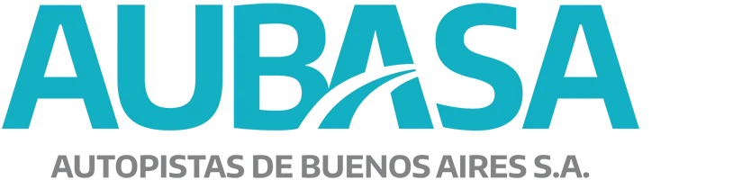
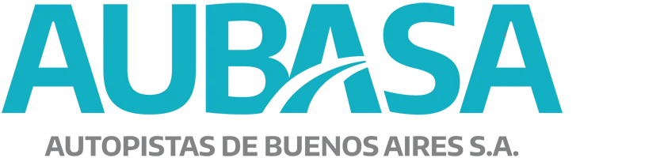
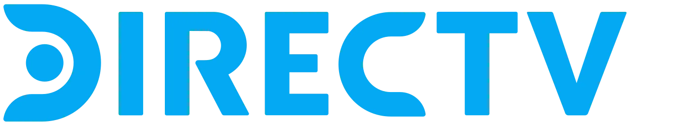
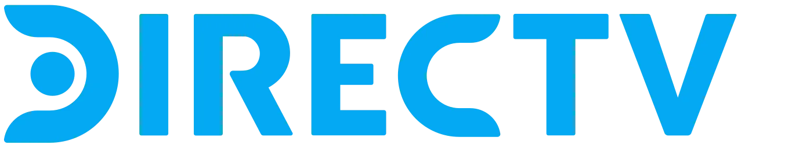

{kind=link}
{kind=link}
{kind=link}
{kind=link}
{kind=link}
{kind=link}
{kind=link}
{kind=link}
{kind=link}
{kind=link}
{kind=link}
{kind=link}
{kind=link}
Phone
+54 11-5272-9000
We are a group of companies specialized in telecommunications and information technology with over 10 years of experience. We focus on the design, implementation, and management of critical infrastructure for operators and companies, ensuring high-availability connectivity.
Provide comprehensive and sustainable technological solutions that drive our clients' digital transformation, guaranteeing operational excellence and 24/7 support.
To be the leading reference in telecommunications and IT infrastructure in Argentina and the region, recognized for our innovation, reliability, and commitment to quality.
Constant innovation, customer commitment, teamwork, environmental responsibility, and professional ethics in every project we undertake.
Our experience and developments allow us to offer a differential service in the market.
We design and implement end-to-end telecommunications infrastructure, from fiber optics to managed IT services, ensuring high availability and optimal performance for operators and companies.
Deployment and management of FTTH networks, backbone, and dedicated links.
Shared access to high-capacity infrastructure for multiple operators.
24/7 operation with proactive monitoring and incident management.
Design, construction, and maintenance of critical telco infrastructure.
+ Years of
experience
+ Successful
Projects
% SLA
guaranteed
A selection of our most important projects. Each implementation demonstrates our experience and dedication in developing cutting-edge technological solutions.

End-to-end high-performance TELCO infrastructure management in BA City.

Redundant fiber backbone between Buenos Aires and La Plata.
FTTH rollout for Internet and TV in partnership with La Usina de Tandil.
Passive optical network design with high growth capacity.

Infrastructure survey and development potential on railway routes.

Complex IP video surveillance system with recording and centralized access.

End-to-end IT infrastructure with connectivity and 24/7 monitoring.
We work with the most important companies in the sector, providing high-quality technological solutions that drive their growth.


 

 



We're here to help you. Don't hesitate to contact us.